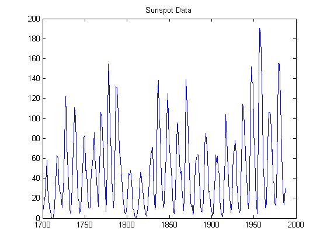
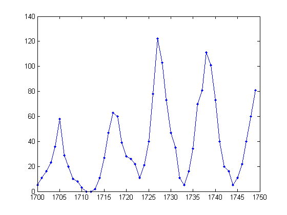
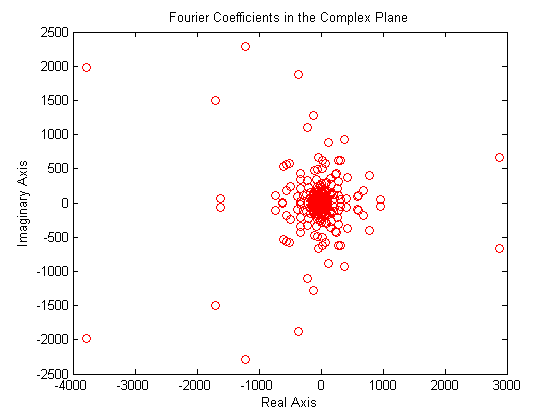
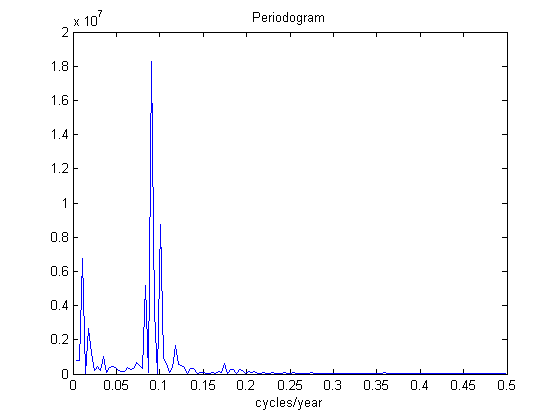
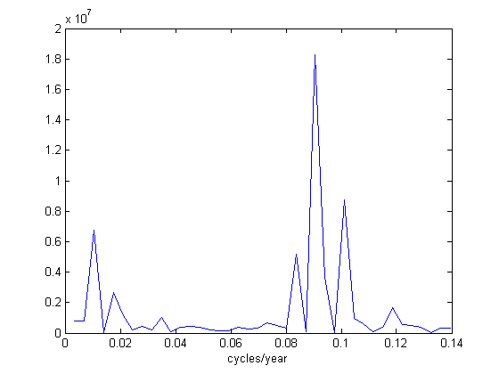
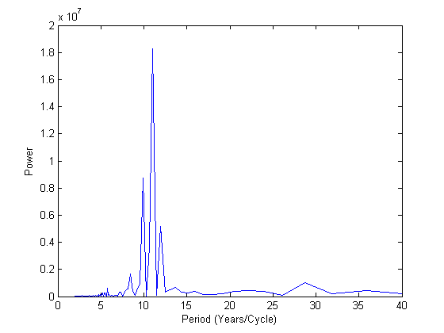
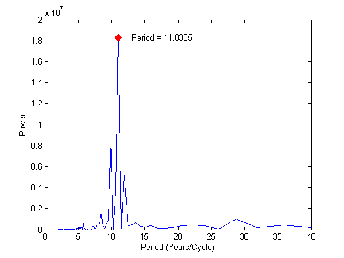

This demonstration uses the FFT function to analyze the variations in sunspot activity over the last 300 years.
Sunspot activity is cyclical, reaching a maximum about every 11 years. Let's confirm that. Here is a plot of a quantity called the Wolfer number, which measures both number and size of sunspots. Astronomers have tabulated this number for almost 300 years.
load sunspot.dat year=sunspot(:,1); wolfer=sunspot(:,2); plot(year,wolfer) title('Sunspot Data')
Here is a closer look at the first 50 years.
plot(year(1:50),wolfer(1:50),'b.-');
 The fundamental tool of signal processing is the FFT, or fast Finite Fourier Transform. To take the FFT of the sunspot data type the following.
The first component of Y, Y(1), is simply the sum of the data, and can be removed.
Y = fft(wolfer); Y(1)=[];
A graph of the distribution of the Fourier coefficients (given by Y) in the complex plane is pretty, but difficult to interpret. We need a more useful way of examining the data in Y.
plot(Y,'ro') title('Fourier Coefficients in the Complex Plane'); xlabel('Real Axis'); ylabel('Imaginary Axis');
The complex magnitude squared of Y is called the power, and a plot of power versus frequency is a "periodogram".
n=length(Y); power = abs(Y(1:floor(n/2))).^2; nyquist = 1/2; freq = (1:n/2)/(n/2)*nyquist; plot(freq,power) xlabel('cycles/year') title('Periodogram')
The scale in cycles/year is somewhat inconvenient. We can plot in years/cycle and esimate the length of one cycle.
plot(freq(1:40),power(1:40))
xlabel('cycles/year')
 Now we plot power versus period for convenience (where period=1./freq). As expected, there is a very prominent cycle with a length of about 11 years.
period=1./freq; plot(period,power); axis([0 40 0 2e+7]); ylabel('Power'); xlabel('Period (Years/Cycle)');
Finally, we can fix the cycle length a little more precisely by picking out the strongest frequency. The red dot locates this point.
hold on; index=find(power==max(power)); mainPeriodStr=num2str(period(index)); plot(period(index),power(index),'r.', 'MarkerSize',25); text(period(index)+2,power(index),['Period = ',mainPeriodStr]); hold off;